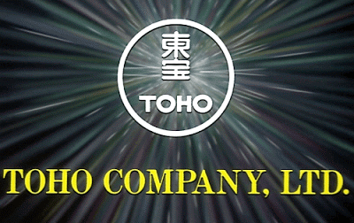
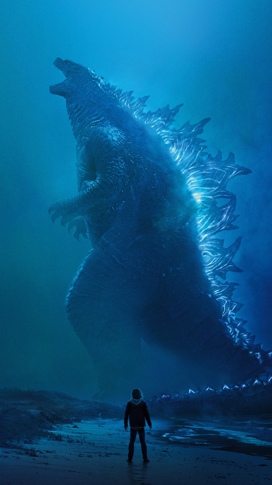

Toho Company Ltd. (Toho Studios)
Al pensar en el Séptimo arte, ¿Qué es lo primero que se te llega a la mente? , sin duda lo primero que viene a la mente de muchas personas es Hollywood, ya sea en su época dorada con sus grandes estudios y actores, o bien, las superproducciones de superhéroes que vemos actualmente en las salas.
Viviendo justo al lado de Estados Unidos, no es extraño que sea la influencia cinematográfica directa, pero olvidamos que las películas estadounidenses no son las únicas que nos rodean y, definitivamente, han tenido su buena dosis de influencia extranjera.
Japón es un país con una riqueza cultural extraordinaria que abarca varias ramas artísticas, entre ellas, el cine. Por ello, no es de extrañar que sea el lugar de origen de uno de los estudios de cine más destacados en la historia: Toho Studios.
Toho es una productora de cine japonesa establecida en la ciudad de Chiyoda, Tokio, Japón. Es una de las compañías de la empresa Hankyu Hanshin Toho. En Oriente, es más conocida por la gran cantidad de películas sobre kaiju (monstruos) y tokusatsu (efectos especiales), la serie de TV tokusatsu Chouseishin, las películas de Akira Kurosawa, y las películas de anime producidas por el estudio de cine Ghibli. Su mayor creación y de mayor éxito tanto nacional como internacional es sin duda Godzilla, conocido como El rey de los monstruos, sin embargo, también ha creado otras sagas de monstruos como Gamera y Mothra. Toho también ha participado en varias películas de anime, así como en videojuegos.
Índice:
- 1. Historia
- 2. Producción y distribución
- 2.01. 50s
- 2.02. 60s
- 2.03. 70s
- 2.04. 80s
- 2.05. 90s
- 2.06. 2000
- 2.07. Televisión
- 2.08. Tokutsatsu
- 2.09. Anime
- 2.10. Videojuegos
Historia
Toho fue fundada en 1932 por la empresa privada de ferrocarriles Hankyu Railway como Compañía de teatro Tokyo-Takarazuka. La compañía produjo muchas obras de kabuki en la ciudad de Tokio.
En la década de 1950, muchas de sus películas fueron exportadas a Estados Unidos, donde tuvieron bastante éxito. Toho abrió la sala de cine La Brea en Los Ángeles con el fin de mostrar sus películas y poder distribuirlas. La compañía fue conocida entonces como el Teatro Toho durante las décadas de 1960 y 1970. Toho también inauguró una sala de cine en San Francisco y en Nueva York. Ésta última en el año 1963.
La compañía se dividió, formándose una nueva empresa llamada Shintoho que solo sobrevivió hasta 1961.
La compañía Toho también ha contribuido a la producción de películas estadounidenses, como el filme de Sam Raimi, A Simple Plan (1998).
La empresa tiene como subsidiarias a Toho Pictures Incorporated, Toho International Company Limited, Toho E. B. Company Limited, Toho Music Corporation y Toho Costume Company Limited.
Actualmente volvió su participación luego de estuviera mas de una década ausente desde la película de Godzilla llamada Godzilla: Final Wars donde sorprendió a todos con una nueva película de Godzilla llamada Godzilla: Resurgence en el año 2016.Producción y distribución
50s
- Godzilla (1954)
- Toumei ningen (1954)
- The Sound of the Mountain (1954)
- Godzilla Raids Again (1955)
- Sazae-san (1956)
- Rodan (1956)
- The Mysterians (1957)
- Varan (1958)
- The Hidden Fortress (1958)
- Battle in Outer Space (1959)
60s
- Hawaii-Midway Battle of the Sea and Sky: Storm in the Pacific Ocean (1960)
- The Last War (1961)
- Mothra (1961)
- Yojimbo (1961)
- King Kong vs. Godzilla (1962)
- Atragon (1963)
- Matango (1964)
- Ghidorah, the Three-Headed Monster (1964)
- Dogora (1964)
- Mothra vs. Godzilla (1964)
- Devil Woman (1964)
- Invasion of the Astro Monster (1965)
- Frankenstein Conquers the World (1965)
- Punch Guy (1966)
- Ebirah, Horror of the Deep (1966)
- War of the Gargantuas (1966)
- Son of Godzilla (1967)
- Destroy All Monsters (1968)
- All Monsters Attack (1969)
70s
- Space Amoeba (1970)
- Godzilla vs. Hedorah (1971)
- Godzilla vs. Gigan (1972)
- Godzilla vs. Megalon (1973)
- Submersion of Japan (1973)
- Godzilla vs. Mechagodzilla (1974)
- Evil of Dracula (1974)
- Lupin III (1974)
- Terror of Mechagodzilla (1975)
- Demon Spies (1975)
- The War in Space (1977)
- Zero Fighter (1976)
80s
- The Return of Godzilla (1984)
- My Neighbor Totoro (1988, coproduction with Studio Ghibli)
- Godzilla vs. Biollante (1989)
90s
- Godzilla vs. King Ghidorah (1991)
- Godzilla vs. Mothra (1992)
- Godzilla vs. Mechagodzilla II (1993)
- Godzilla vs. SpaceGodzilla (1994)
- Godzilla vs. Destoroyah (1995)
- Rebirth of Mothra (1996)
- Rebirth of Mothra 2 (1997)
- Rebirth of Mothra 3 (1998)
- Godzilla 2000: Millennium (1999)
2000
- Metropolis (2001)
- Godzilla vs. Megaguirus (2001)
- Spirited Away (2001), coproduction with Studio Ghibli)
- Godzilla, Mothra and King Ghidorah: Giant Monsters All-Out Attack (2002)
- Hamtaro Movie 3: Hamu Hamu Guran Purin/Ham-Ham Grand Prix (2003) (distributor)
- Godzilla Against Mechagodzilla (2003)
- Godzilla, Mothra, Mechagodzilla: Tokyo S.O.S (2003)
- Howl's Moving Castle (2004), coproduction con Studio Ghibli)
- Godzilla: Final Wars (2004)
- Steamboy (2004)
- Animal Crossing (serie) (2006), co-production con Oriental Light and Magic, Nintendo, y Shōgakukan
- Touch Movie (2006)
- Rough (2006)
- Nada Sousou (2006)
- Shin Godzilla (2016)
Televisión
- Godzilla Island
- Zone Fighter
- Godzilla: The Series
Tokusatsu
- Warrior Of Love: Rainbowman (1972)
- Meteor Man Zone - Zone Fighter (1973
- Warrior Of Light: Diamond Eye (1973)
- Flying Saucer War Bankid (1976)
- Megaloman (1979)
- Godzilla Island (1997)
Animé
- Touch (1985)
- Midori Days (co-production) (2004)
Videojuegos
En los últimos años y por un período, que han producido los videojuegos. Uno de sus primeros videojuegos fue el juego de NES 1990 titulado Circus Caper. Más tarde, siguieron con una serie de juegos basados en Godzilla y un juego de 1992 llamado Nobuo Serizawa no Birdy intento. Asimismo, ha publicado juegos como Super Aleste. Incluso trabajó con Bandai en Dr. Jekyll y Mr. Hyde, lanzado en Japón en 1988 y en América del Norte en 1989. En Años Atari y en el Desarrollo de Pipeworks Software se Lucha Tiene Super Smash Bros. Seriés Por nintendo que se Godzilla Destroy All monsters Melee.